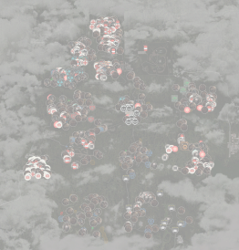
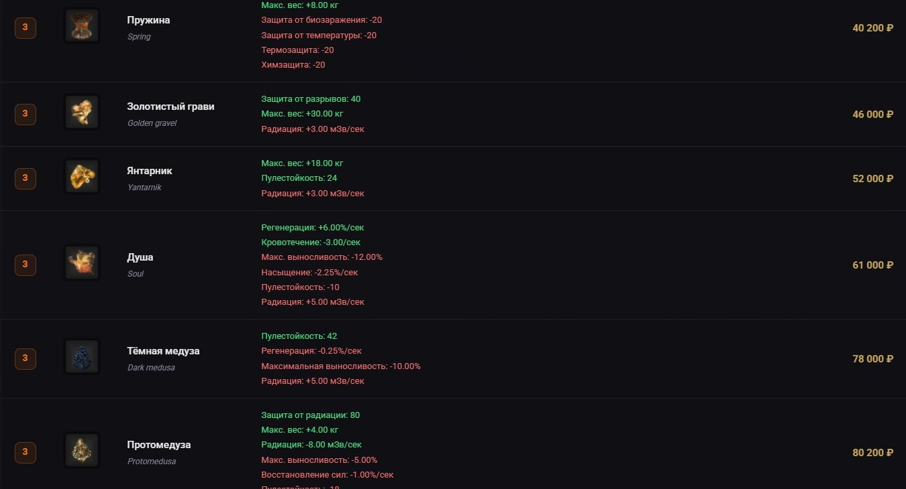
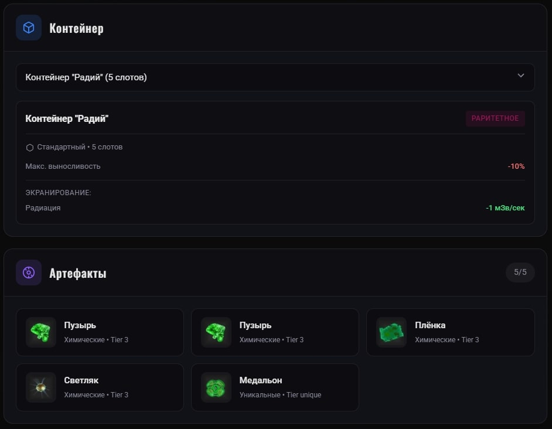
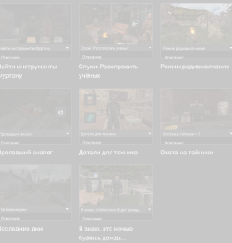
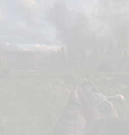

PROJECT CATACLYSM
WIKI
Неофициальная база знаний по игре Project Cataclysm. Интерактивная карта, таблицы артефактов и многое другое.
◆Разделы базы знаний

Интерактивная карта
Детальная карта всех локаций с отметками аномалий, тайников и точек интереса

Таблица артефактов
Полный список артефактов с характеристиками, ценами и способами получения
Перейти
Калькулятор сборок
Собери оптимальный билд с учётом брони, контейнера и артефактов
Перейти
Квесты
Прохождение всех квестов с подробными инструкциями и наградами

Снаряжение
Каталог оружия, брони и снаряжения с характеристиками
О проекте
Project Cataclysm Wiki (Beta) — неофициальная база знаний по игре Project Cataclysm. Здесь собрана вся актуальная информация: интерактивная карта с отметками, подробные таблицы артефактов с ценами и характеристиками.
В будущем будут добавлены разделы с квестами и их прохождением, а также полный каталог снаряжения.
Последние обновления
- Добавлен калькулятор сборок артефактов
- Обновлён дизайн основной страницы сайта
- Обновлён дизайн таблицы артефактов